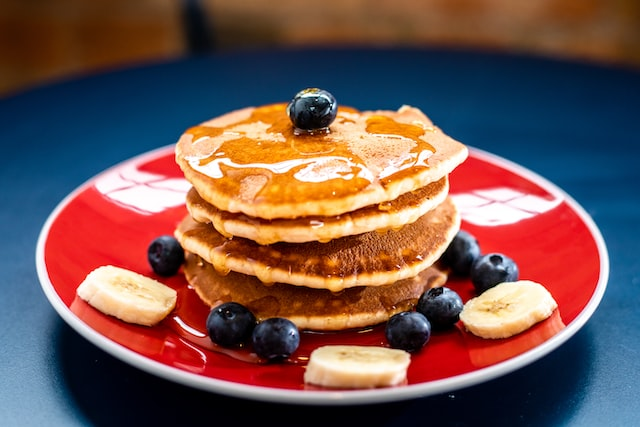

Panqueca Americana

Descrição do prato
Receita de panquecas estilo americanas, fofinhas, perfeitas
para comer com xarope de bordo, manteiga, mel, frutas e o que
mais der vontade!
Ingredientes
- 1 xícara e 1/2 de farinha de trigo comum
- 3 colheres de chá de fermento em pó
- 1/2 colher de chá de sal
- 2 colheres de sopa de açúcar cristal (pode ser mascavo)
- 1 a 1 e 1/4 de xícaras de leite integral
- 1 ovo
- 3 colheres de sopa de manteiga derretida sem sal (pode
ser feito a manteiga noisette)
Instruções
- Em uma tigela, junte os Ingredientes secos, a farinha,
o fermento, o sal, e o açúcar, e misture.
- Misture os ingredientes líquidos, o leite (mais leite
resultará em uma panqueca mais fina, e menos leite em uma
panqueca mais grossa), o ovo, e a menteiga.
- Agora misture bem o líquido com o seco, até obter uma
massa homogênea.
- Pré-aqueça uma frigideira grande, levemente untada, em
fogo médio.
- Despeje aproximadamente 1/4 de xícara de massa para cada
panqueca. Frite até que as bolhas se formem e a borda da panqueca
comece a secar; vire a panqueca com uma espátula para dourar o
outro lado